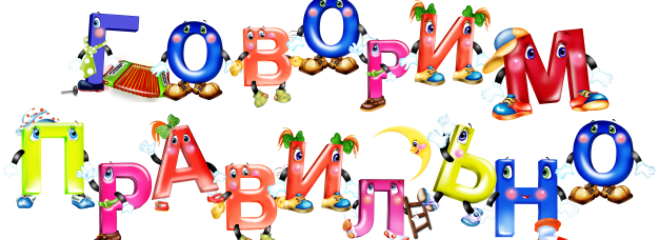

Милости Просим
Здравствуйте, меня зовут Марина. Я - логопед из Санкт-Петербуга. Закончила отделение логопедии СПБ Университета имени Герцена в 1985 году. Имею опыт работы более 20 лет, включая 5 лет практики в Чикаго.
Среди моих пациентов дети с общей речевой задержкой, с нарушениями звукопроизношения, с фонетико-фонематическими накушениями, с задержкой психического развития.
Начальная Консультация

Если к возрасту 3-х лет ваш ребенок еше не говорит или говорит так, что его никто не может понять, то рекомендуется пройти консультацию у логопеда.
Для того чтобы получить у нас бесплатную начальную консультацию, вы можете позвонить нам по телефону или по скайпу, написать нам по электронной почте, или заполнить запрос на нашем сайте.
Начальная консультация позволяет:
- выявить соответствует ли речь ребенка возрастной норме
- понять характер речевых нарушений
- определить какие занятия нужны ребенку
- договориться об удобном времени для занятий